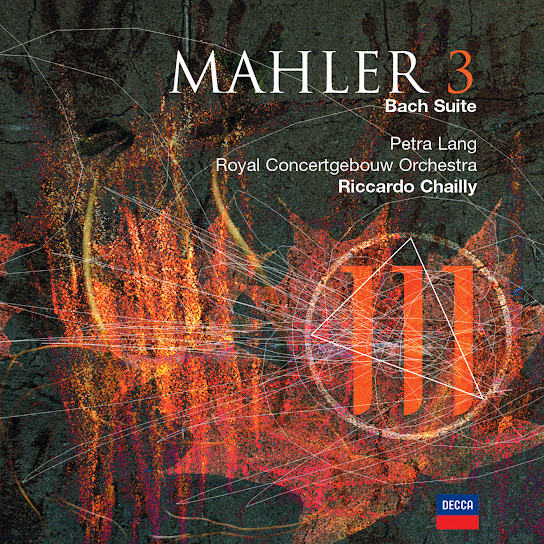
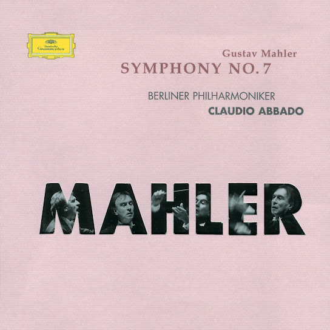
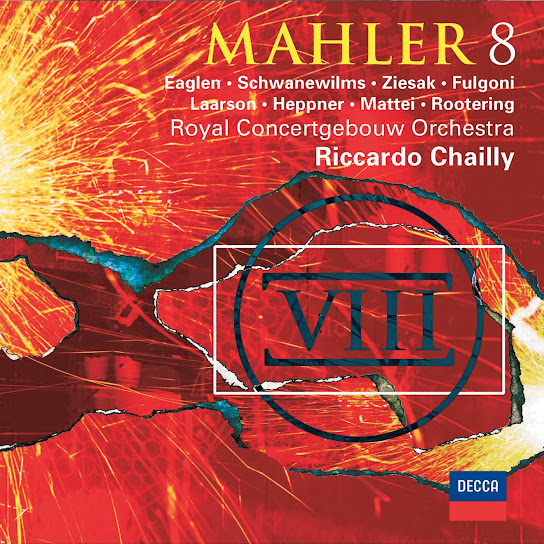
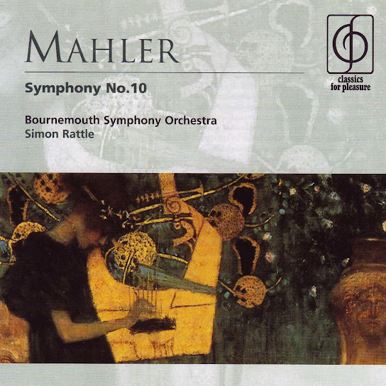

Introduction
보헤미아에서 증류주 양조업자의 아들로 태어난 구스타프 말러는 카펠마이스터로서 화려한 경력을 쌓아 나갔다. 여러 지역의 크고 작은 지휘자 자리를 거쳐 빈 궁정 오페라의 음악감독이 되었고, 그곳에서 10년 동안 활동하다가 마침내 뉴욕의 메트로폴리탄 오페라극장으로 진출했다. 그에 반해 그가 작곡한 음악은 동료 음악가와 청중에게 외면당했고, 세상을 뜨기 두 해 전에야 “천인 교향곡”이라 불리는 교향곡 8번의 초연으로 압도적인 승리를 맛보았다.
Albums
말러는 흔히들 어렵다고 많이 한다. 물론 세세하게 음악적으로 따지고 철학적으로 따지면 끝없이 깊은 것은 사실이다. 하지만 한번 빠지게 되면 깊게 빠지게 된다. 우선 지휘자는 잘 모르겠으면 Abbado, Bernstein 중 아무거나 집어도 실패하지 않는다. 교향곡은 1번과 5번이 가장 입문하기가 편한 편이다. 그 다음부터는 자유인데, 보통 6, 7, 8이 귀에 익기가 쉽지 않은 편이다. 필자 역시 7번은 아직 귀에 익지 않은 것 같다.
베를린 필하모닉
클라우디오 아바도
Symphony No.1
버밍엄 심포니
(링크는 베를린 필)
사이먼 래틀
Symphony No.2

로열 콘세르트헤바우
리카르도 샤이
로열 콘세르트헤바우
리카르도 샤이
Symphony No.3
베를린 필하모닉
클라우디오 아바도
Symphony No.4
빈 필하모닉
레너드 번스타인
Symphony No.5
빈 필하모닉
레너드 번스타인
Symphony No.6

베를린 필하모닉
클라우디오 아바도
베를린 필하모닉
클라우디오 아바도
Symphony No.7

로열 콘세르트헤바우
리카르도 샤이
로열 콘세르트헤바우
리카르도 샤이
Symphony No.8
베를린 필하모닉
카라얀
Symphony No.9

베를린 필하모닉
사이먼 래틀
베를린 필하모닉
사이먼 래틀
Symphony No.10